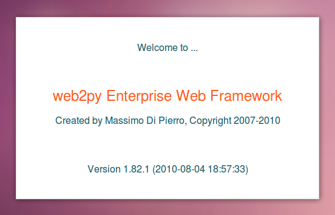

Introducción
Web2Py es un framework WEB (marco de trabajo / herramienta de desarrollo) de muy fácil uso y aprendizaje, completamente funcional para crear aplicaciones web 2.0 de manera totalmente interactiva (diseño y programación por el navegador web!). Incluye las últimas tecnologías de una forma simple y clara (javascript, ajax, css, etc.).
Sitio Oficial: http://www.web2py.com/
Sitio en Español: http://www.web2py.com.ar/
Grupo de usuarios en español: http://groups.google.com/group/web2py-usuarios
Documentación Principal (libro publicado en html de acceso gratuito): http://www.web2py.com/book
Hoja de referencia rápida:
Como instalar y ejecutar Web2Py:
Web2py viene con baterías incluidas, por lo que su instalación es muy simple:
Windows
Pasos:
Descargar el paquete todo-en-uno web2py_win.zip
Descomprimirlo
Ejecutar (doble click) en
web2py.exe
Linux (Debian y derivados)
Pasos:
Instalar las dependencias (python y conectores a la base de datos)
Descargar el código fuente web2py_src.zip
Descomprimir
Iniciar
web2py.py
Ejemplo:
Recorrida
A continuación mostraremos una breve recorrida sobre las características principales de web2py.
Nota: Los links solo funcionan si está web2py funcionando en la máquina local, puerto 8000 (configuración por defecto).
Arranque
Al ejecutar web2py nos mostrará la pantalla de bienvenida:
Web2py trae incorporado un servidor web para desarrollo, para iniciarlo deberemos elegir y ingresar una contraseña de administrador propia (por ej. 'abc') y presionar start:
Bienvenida
Al iniciar, web2py lanzará un explorador con la página de bienvenida predeterminada:

Interfaz Administrativa
Allí podremos ver los ejemplos interactivos, documentación y lo más importante, empezar a crear y editar nuestras aplicaciones web, yendo a la http://127.0.0.1:8000/admin/:

En dicha página, ingresar la contraseña previamente escogida en los pasos previos, y se abrirá un índice con las aplicaciones instaladas en esta instancia:
Por ejemplos, podemos ingresar a la aplicación welcome (bienvenida), presionando el enlace EDIT (editar):

Y allí, por ejemplo, podemos modificar el código fuente del controlador principal (default.py presionando en el link edit (editar):

Administración de Base de datos
Web2py viene con una controlador llamado AppAdmin que sirve para consultar, modificar e importar/exportar los datos de nuestra aplicación. Se ingresa por la interfaz administrativa, en el link Database Administration:

Allí podemos agregar un nuevo registro, por ejemplo en la tabla usuarios (insert new record):

Y también es posible realizar consultas y actualizaciones: